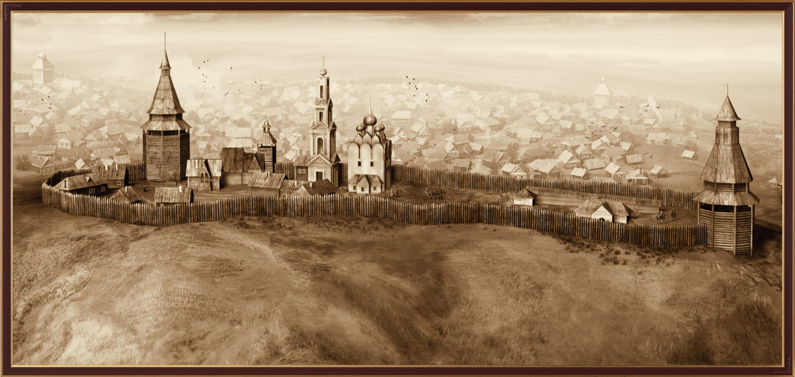

Строительсво Уфы. После присоединения территории нынешнего Башкорстана, необходимо было эту территорию защитить. Для этого башкирами было отправлена просьба о строительстве нового города-крепости. Стоит заметить, что строился не совсем новый город «с нуля», ещё до него на этом же месте стоял древний город Тура-тау («Турова гора»). Название произошло от имени нагайского Тура хана, резеденция которого находилась в этом городе. По некоторым предположениям, ещё в I веке нашей эры на месте Туратая был город Башкорт, однако это только предположение. Была ещё одна причина потребности в постройке нового города: с башкирской территории собирался ясак (дань), потом отвозился в Казань, ближний крупный город, а уже оттуда в Москву. Во-первых, территория башкир-качевников не маленькая, во-вторых, до Казани ехать туда и обратно невероятно долго. Теперь потребность в столичном городе-крепости, я думаю, понятна.
На новое строительство царём было дано добро, и в 1574 началось возведения новой крепости - Уфы. Из Москвы на башкирскую землю был отправлен воевода Иван Нагой и 200 стрельцов. По началу был построен кремль: несколько башен (Михайловская, Никольская и Наугольная), военная концелярия, дом воеводы и Смоленский собор. Основное строительтво шло около 10 лет. Постепенно начали строиться новые дома вокруг центра, и военная крепость всё больше напоминала город.
Очень интересна история названия города - «Уфа». Была шутка:«Поднимались два человека в гору. Один тяжёло вздохнул:«Уф-ф...» Другой не раслышал и спросил:«А?» Так получил своё название город». Всё это, конечно, шутка, но если задуматься, откуда такое название? Одни считают, что «Уфа» произошло от башкирского «уба» («холм»). Другие говорят, что «Уфа» - это слово с доисторического племенного языка означает своего тотемного животного. Одна из наиболее распространённых гипотез: «Уфа-Идель», ныне «Кара-Идель» («Чёрная река»), гораздо темнее чем река Белая («Ак-Идель»). И это название «Уфа» получил город, постоенный на «Чёрной реке».
Заселение Башкортстана. В 1584 году умер Иван IV (Грозный). Царём стал его сын Фёдор Иоаннович, который был очень слаб, и вскоре, через 14 лет умер. Власть перешла к Борису Годунову. Из истории мы знаем, что народ не признавал незаконного царя, о чём свидетельсвует начало Смутного времени. О нём есть информация в шежере (родословной) башкир:«Пришли голодные годы. Зимы были долгие. За три года лошади и овцы вымерли. Зерновые не уродились». В годы борьбы за власть Лжедмитрия I и Лжедмитрия II (со стороны Польши) башкиры активно поддерживали Минина и Пожарского, о чём также свидетельствует шежере.
Когда, в 1613 году, закончилась смута, царствовать начал Михаил Романов и народ наконец смог вздохнуть спокойно, началось активное заселение башкирской территории. Множество людей занимали уральские степи, которые, по их мнению, не кому не принадлежали. Таким образом договор, заключённый между башкирскими вождями и Иваном IV, был нарушен.
Что произошло с башкирами? Естественно, под давлением русских, а также массы чувашей, татар, марийцев, удмуртов башкиры переселялись к востоку, бежали в Закамье, Приуралье, в Сибирь. На смену старым традициям приходили новые, русские обычаи. Однако нельзя сказать, что башкиры забыли о своих традициях, скорее русские нормы повлияли на башкирские в той или иной степени.
Заключение. После заселения башкирской территории, коренной народ вытеснялся. Среди башкир уже не было племенного деления, теперь народ стал единым. Можно сказать, что именно в это время появился башкирский народ, в это время заканчивал своё формирование этнос.
В прежние века башкиры занимались скотоводством, пчеловодством, а теперь род деятельности кординально менялся, ведь всё меньше становилось территории для разведения животных; всё больше территории использовали под посевные участки.